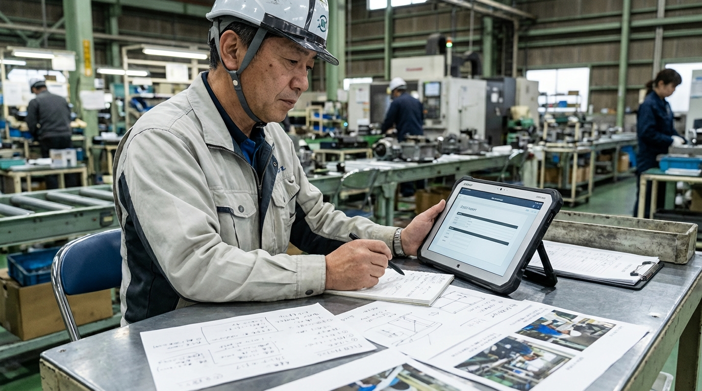
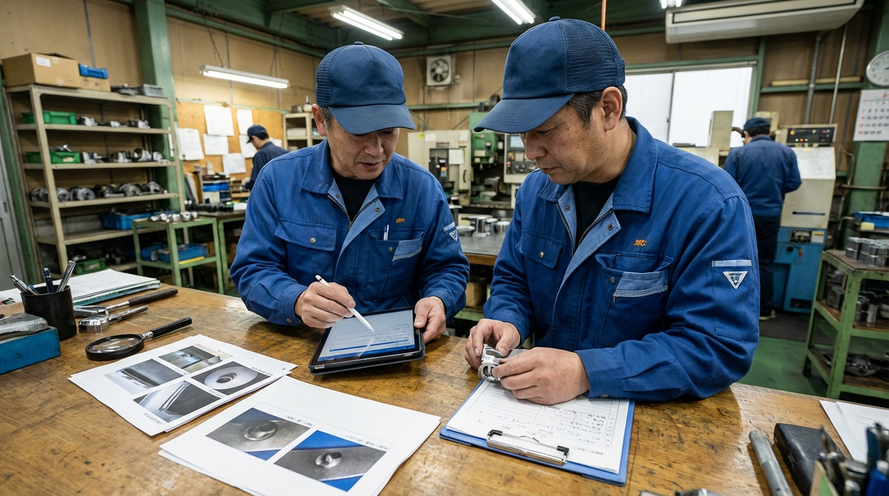

作業報告が後回しになる
紙・包装では、作業報告を後でまとめて入力する流れになりやすく、負担が一度に重くなりやすい。
紙・包装の AI 活用・業務改善
業務整理から活用設計・自動化候補まで、現場で回る形に整える伴走型 AI コンサル
AI-SABI が、課題整理から活用方針、ツール選定、連携・自動化設計、定着支援まで伴走し、紙・包装の業務改善を現場に合う形で進めます。作業報告、不良報告、品質共有、手順共有など、成果が見えやすい業務から整え、必要に応じて半自動化や自動化候補まで設計します。
現場で起きやすい課題
紙・包装では、作業報告を後でまとめて入力する流れになりやすく、負担が一度に重くなりやすい。
不良報告の文面や整理の仕方が人によってばらつき、品質が揃いにくい。
品質共有の前に情報を集め直す必要があり、確認や作成に工数がかかりやすい。
現場で使うメモや改善案が個人管理になり、標準化や再発防止へつながりにくい。
現場目線で変える 4 ステップ
紙・包装の中で、最初にどの業務から着手するかを整理します。
入力元、確認者、提出先が明確な 1 業務から始め、現場で回る形へ具体化します。
下書き支援、要約、一次対応、共有、ツール連携まで、どこまで任せるかを実務フローに沿って整理します。
テンプレート、確認ルール、使い方説明まで含めて、定着する形へ落とし込みます。
現場目線で変える業務
現場目線で選ばれる 3 つの理由
小さく始めやすい
最初に 作業報告 や 不良報告 のような、成果が見えやすい 1 業務から始めます。だから、現場でも受け入れやすく、横展開しやすくなります。

活用範囲まで設計する
単なる文案作成だけでなく、要約、共有、一次対応、転記削減、ツール連携まで含めて、どこまで任せるかを整理します。

定着まで伴走する
テンプレートや確認ルール、社内共有まで含めて整えるので、導入後も使い続けやすい形へ落とし込めます。
運用イメージ
Case 01
Case 02
こんな相談から始められます
作業報告の下準備や整理をもっと軽くして、対応時間を確保したい。
不良報告の文面や整理の型をそろえて、担当者によるばらつきを減らしたい。
報告や共有の型を整えて、改善活動を属人化させたくない。
他サービスとの違い
| AI-SABI | 汎用 AI ツール導入 | 外注代行 | |
|---|---|---|---|
| 現場理解 | 現場フローに合わせて設計 | ツール操作中心 | 作業引き受け中心 |
| 活用範囲の設計 | 下書き支援から自動化候補まで切り分ける | 単発利用で止まりやすい | 社内にノウハウが残りにくい |
| 定着支援 | 運用調整まで伴走 | 導入で終了しやすい | 外注依存になりやすい |
| 展開性 | 次業務へ広げやすい | 個人利用で止まりやすい | 横展開しづらい |
支援プラン
初期診断
業務改善伴走
定着支援
横展開支援
支援対象業務、伴走期間、必要なサポート内容に応じてご案内します。まずは公式LINEからご相談ください。
LINEで無料相談ご利用までの流れ
公式LINEから、現在の課題と重い業務をヒアリングします。
まず何を変えるか、どこまで変えるかを決めます。
AI 活用の試行、連携・自動化範囲、確認ポイントを整えます。
現場で回る形に整え、必要に応じて次業務へ広げます。
よくあるご質問
はい。公式LINEから無料相談いただけます。友だち追加後に、紙・包装でいま重い業務を書いていただければ、着手しやすい改善テーマを整理します。
はい。まずは 1 業務から始め、成果を見ながら広げる前提で設計します。
はい。現場の流れと目的を整理したうえで、必要に応じてツール選定から伴走します。
下書き支援、要約、共有、一次対応、ツール連携、転記削減まで、業務ごとに切り分けて設計します。
はい。いまの確認フローや既存ツールを踏まえて、無理なく移行できる形へ調整します。
対象業務、伴走期間、必要なサポート内容に応じてご案内します。まずは公式LINEからご相談ください。
公式LINE
公式LINEの初回相談では、紙・包装で今重い業務、活用方針、ツール選定、連携・自動化候補まで一緒に整理します。